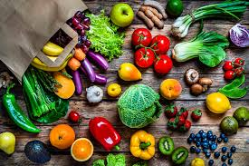

Trail Running
Alimentación
LA DIETA DE LOS MARATONISTAS, ¿QUÉ COMEN LOS DEPORTISTAS DE ALTO RENDIMIENTO?:
Mientras el consumo de calorías de una persona promedio está entre las 1500 y 2000, para los deportistas de alto rendimiento la historia cambia. Ya sean nadadores, boxeadores, atletas, jugadores de americano o maratonistas, deben de cubrir otro tipo de necesidades de acuerdo con su actividad física.Es por eso que existen nutriólogos dedicados exclusivamente a la nutrición de alto rendimiento. Crean estrategias de alimentación que van de la mano con los entrenamientos y trabajan en equipo con todos los involucrados.
Suplementos dietarios
Los suplementos deportivos se consideran suplementos dietéticos o alimenticios. Los suplementos alimenticios son productos que se toman por vía oral (por la boca) para complementar la dieta. Los suplementos alimenticios no requieren la aprobación de la Administración de Alimentos y Medicamentos (FDA, por sus siglas en inglés) de Estados Unidos para que se puedan vender. Se supone que las compañías que fabrican estos suplementos siguen las buenas prácticas de fabricación recomendadas por la FDA para garantizar la calidad y la seguridad de los productos. Pero estas medidas de seguridad no siempre se cumplen y algunos suplementos pueden contener sustancias farmacológicas y aditivos que no aparecen en sus etiquetas.
Alimentación Saludable vs Dietas
¿Qué es llevar una alimentación sana?
Si preguntamos a las personas qué es eso de llevar una alimentación saludable, lo primero que te dicen es comer a base de lechuga y tomate, y esto no es así.
Llevar una alimentación o un estilo de vida saludable viene acompañado de una alimentación correcta, basada en vegetales en los que se incluyen todos los grupos de alimentos reales y se reduce lo máximo el consumo de productos ultraprocesados. Pero además de esto, también se incluye la práctica de ejercicio físico, tener vida social sana y tener buena salud.
Llevar una alimentación saludable es compatible con un cumpleaños, unas fiestas o con el verano porque se aprende realmente a disfrutar de esos eventos que son puntuales de la mejor manera. Se aprende que, los días previos a ese evento social, se come de manera sana y justo después de dicho evento se seguirá comiendo saludable. No existen restricciones, compensaciones por los excesos ni sentimiento de frustración porque sabemos a lo que nos exponemos.
«Bueno Sara, pero es que llevar una alimentación sana es muy difícil si quieres tener vida social» es la típica frase que me suelen decir, y siempre contesto lo mismo: No es complicado, nosotros lo hacemos complicado. Siempre se pueden encontrar opciones más saludables en cualquier bar o restaurante, pero si no queremos verlo, nunca vamos a encontrarlas.
Si realmente vamos a un evento social y queremos cuidar la alimentación, se encuentran soluciones muy fácilmente, sólo debemos aprender a encontrarlas.